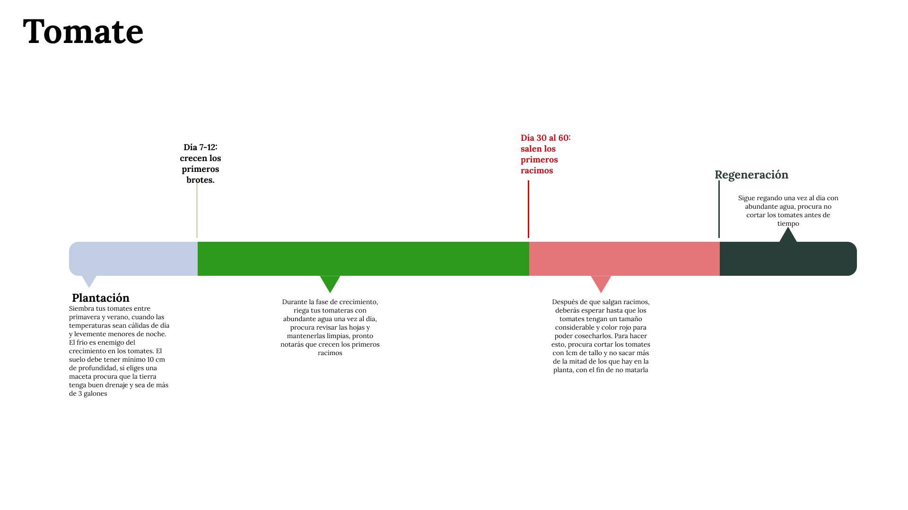
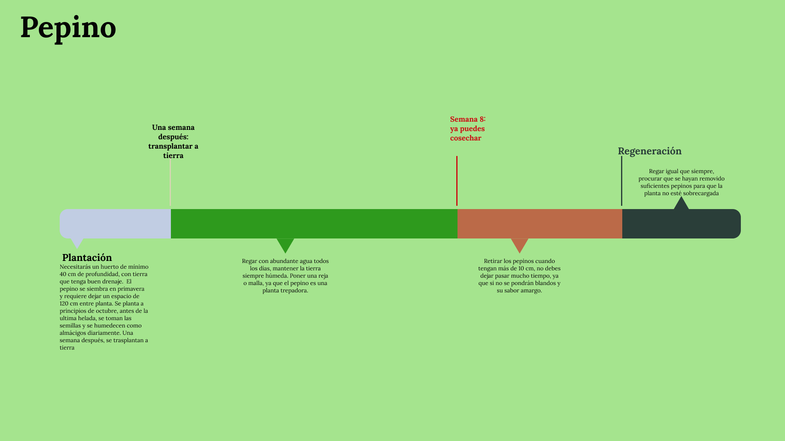

TOMATE
Versátil, facil de plantar, delicioso
De Italia a Chile, todos disfrutamos de un rico tomate de campo. ¿Qué mejor que cultivarlo con tus propias manos? Reductor del colesterol, de efecto diurético, protector de la piel y bueno para el corazón: el tomate está lleno de propiedades. Su sabor, de notas saladas y dulces, y su facil plantación y cosecha, lo convierten en una de nuestras selecciones para tu huerta.Para más información sobre cómo plantar y cosechar tomates haz clickaquí

MANIFIESTO
La base perfecta para tus platos
Huerta Virtual nace como un proyecto que busca conectar a personas de zonas urbanas con la experiencia de crecer y cosechar sus propias frutas y verduras. Como posiblemente ya notaste, te entregamos una lista de vegetales que puedes tener en una huerta urbana, desde los más simples, como la menta, hasta los más desafiantes, como el limón. Como equipo, creemos en la soberanía alimentaria, y consideramos que plantar lo que comemos es una solución a los vaivénes de precios y disponibilidad de alimentos saludables. Las huertas pueden sostener desde individuos hasta comunidades. Sabemos que no es una tarea fácil, y por eso te invitamos a contactarnos, contarnos tu experiencia con huertas urbanas, o tus sugerencias para mejorar nuestros portales o tus comentarios sobre el proyecto a proyectohuertavirtual@gmail.com

POROTO VERDE
Más fácil de lo que crees
En el campo lo saben: es difícil encontrar porotos verdes tán frescos como los que uno planta: Buena fuente de calcio, silicio y hierro, llenos de vitamina A y antioxidantes, los porotos verdes son el complemento perfecto para combatir la anemia, en especial para aquell@s que prefieren no consumir productos animales.


PEPINO
De bebidas a ensaladas, el mejor complemento
Una simple rodaja de pepino convierte un vaso de agua en una bebida gourmet: impresiona a tu familia y amigos con tus propios pepinos: con propiedades antiinflamatorias, neuronales y llenos de potasio, estas refrescantes verduras son ideales para huertos de principiantes.

ACELGA
Una verdura a prueba de todo
Barata, vitamínica y fácil de cultivar: la acelga crece con facilidad en distintos tipos de suelo y sirve como base para sopas, cremas o budines: si bien no es la favorita de los niños, su sabor neutro sirve para combinarla con ingredientes más potentes. La acelga es rica en vitaminas y útil para dar volumen a tus preparaciones.

LIMÓN
Un desafío, pero vale la pena
Demorará en crecer, pero el resultado será satisfactorio: tener un limonero en tu casa te convertirá en la envidia de tus amigos, que tendrán que correr al super cuando quieran aliñar sus platos. Sirve para tragos, postres, ensaladas y limonadas, y sus propiedades son importantes para quien quiere nutrir su organismo: Alto en vitamina C, B, calcio, hierro, magnesio, potasio y fibra: un limón tiene mucho más para ofrecer de lo que crees, y puedes utilizar desde su cáscara hasta su jugo. Para más información sobre como plantar y cosechar limón haz clickaquí
AJI
Un picor fácil de conseguir en tu huerta
Verde, rojo, ahumado o fresco: el ají es un clásico para las huertas pequeñas: con un tiempo de cosecha relativamente corto, el ají es una de las plantas más fáciles de mantener. Podrás mezclar diversas variedades en tu huerta, usarlos frescos, o incluso guardarlos en conserva para regalarlos a tu familia. Existen cientos de ajíes, y conseguir sus semillas en línea es muy fácil ¿Te atreves a cultivarlos?. Para más información sobre como plantar y cosechar ají haz clickaquí
FRUTILLA
La reina de los postres
Fáciles de mantener, dulces y alegres: las frutillas son la fruta de temporada predilecta para una huerta fácil. Con la correcta cantidad de agua y una temperatura cálida, tendrás muchísimas frutillas creciendo en tu huerta. Para más información sobre cómo plantar y cosechar tus frutillas revisa estevideo
MENTA
Tecitos y mojitos
Ideal para los resfríos y buenísima para los cócteles, la menta es la planta más fácil de cultivar de esta lista: cuando formes tu huerto, te darás cuenta de que la menta no para de crecer núnca! Menta ilimitada, posibilidades infinitas. Úsala para tragos y bebidas, pero atrévete también a mezclarla en platillos salados. La cultura árabe utiliza la menta como aliño en carnes y guarniciones, con muy buenos resultados. Podrás mezclar diversas variedades en tu huerta, usarlos frescos, o incluso guardarlos en conserva para regalarlos a tu familia. Existen cientos de ajíes, y conseguir sus semillas en línea es muy fácil ¿Te atreves a cultivarlos?. Para más información sobre como plantar y cosechar menta haz clickaquí
ZANAHORIA
Hay vitaminas en tu huerta
Cargada de betacarotenos y buena para la piel, la zanahoria te convertirá en un profesional de la huerta: fácil de cultivar y de rápido crecimiento, la zanahoria te ayudará a aprender a cultivar tubérculos, verduras que crecen bajo tierra. Recrearás la clásica escena del campesino tirando de una zanahoria atrapada en la tierra, y el premio valdrá la pena: las zanahorias de huerta suelen crecer más grandes y largas que las que encontrarás en tus negocios locales, que suelen ser de un tamaño uniforme.Para más información sobre como plantar y cosechar zanahoria haz clickaquí
CILANTRO
El de las puntas redondas
El cilantro crece fácilmente en distintos tipos de ambiente, al igual que su primo, el perejil, proliferará sin problemas en tu huerta. No tendrás que preocuparte de cuidados especiales y prontamente estarás picando hojitas sobre todos tus platos. Para más información sobre como plantar y cosechar cilantro haz clickaquí

PEREJIL
El de hojas puntiagudas
Con un sabor más balanceado que su primo el cilantro, el perejil aportará un brillo único a tus platos y crecerá facilmente en huertas rurales y urbanas. Para más información sobre como plantar y cosechar perejil haz clickaquí